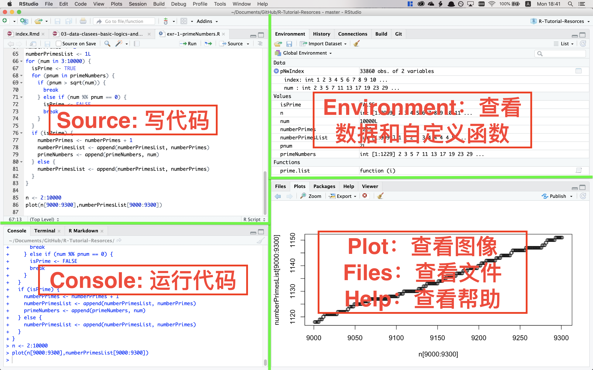
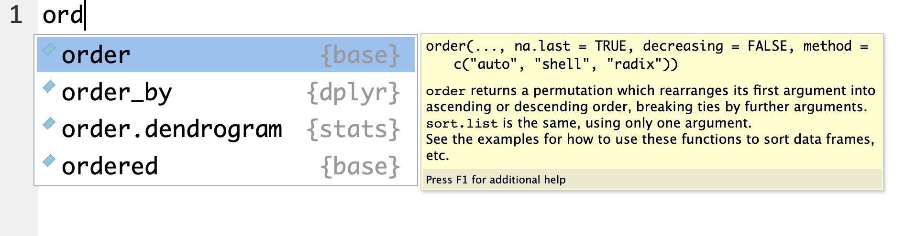
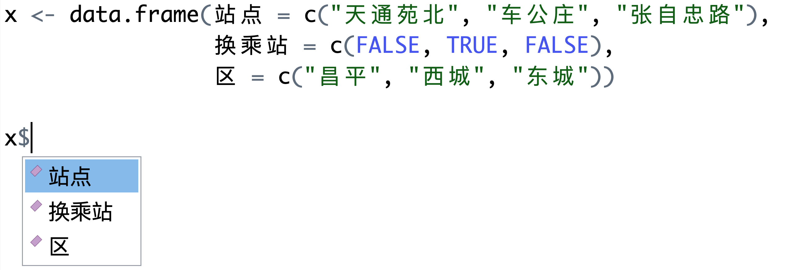

1.3 RStudio界面介绍，基本操作，和创建新项目
1.3.1 界面
1.3.1.1 概览

1.3.1.2 左下角：Console（控制台）
Console是执行代码的地方。试试在里面输入1 + 1并按回车以执行。
1.3.1.3 左上角：Source（源）
Source是写代码的地方。请看第1.3.3.3节。
这个位置也是用来查看文件和数据的地方。试试在console中执行View(airquality)或library(help = "stats").
1.3.1.4 右上角：Environment（环境）
Environment 是一个列表，显示了所有当前工作环境中所有的对象，包括变量（“values”和“data”）和自定义的函数（functions），并简要显示了它们对应的值。
History（历史）和 Connections（连接）不太常使用。
1.3.1.5 右下角：Plots（绘图），Help（帮助），Files（文件）和Packages（包）
Plots是预览图像的区域。试试在console中执行hist(rnorm(10000)).
Help是查看帮助文件的区域。试试在console中执行?hist或?norm.
Files是查看文件的区域，默认显示工作目录 (working directory)。
Packages是安装/查看/更新packages（包）的区域。详情请看第1.4章。
1.3.2 执行代码
1.3.2.1 计算和赋值
我本来不想在开篇就写一小节使用较多的术语的文字，但是R中计算和赋值的概念实在太重要了，我不得不把它放在这里。
几乎所有R中的指令可以归为两种。计算 (evaluation)或者赋值 (assignment).4
没有<-符号的为计算，有<-符号的为赋值。
大多数情况下，计算仅仅会产生效果（或是在console输出结果，或是在plot区产生图像，或是在工作目录新建一个pdf文件），赋值会且仅会改变一个对象（变量）的值（包括新建一个对象），并且不会产生其他的效果。5
首先我们来做一个计算。
在console里输入1 + 1，并按回车以执行。你的console会显示：
> 1 + 1
[1] 2其中2是计算结果， [1]是索引，在第2.1.2节有解释。> 1 + 1是input，[1] 2是output.
还是用1 + 1举例，在本书中，对于input和output的展示格式是这样的：
1+1## [1] 2注意input中的>被省略了，这意味着你可以很方便地直接把代码从本书复制到你的console并按回车执行（因为console本身自带了>)。
再执行以下指令（在RStudio中，可以用Alt+- (Mac是 option+-) 这个快捷键打出这个符号。）：
x <- 5*5+1这是一个赋值指令。计算结果不会显示，但是你新建了一个名为x的变量（准确地说，是“对象”），值为5*5+1的计算结果，即26. 你可以执行x来查看x的值：
x## [1] 26像一个小箭头的赋值符号（<-）的作用是6，首先计算出其右边的指令（必须是一个计算指令；即同一条指令不可以出现两个<-符号），然后把计算结果的值作为一个拷贝赋予给左边的名字，这样就新建了一个对象 (object)。每个对象有一个名称和一个值。7左右是很重要的；绝大多数其他的编程语言，虽然赋值符号是=，但也是从右往左赋值，R使用<-作为赋值符号更形象，避免新手写出像5 = x之类的指令。当然，如果你喜欢，也可以在R中使用=。8
<-用于给任何对象赋值，包括常用的向量 (vector)，列表 (list)，数据框 (dataframe)和函数 (function)。
谨记，赋值符号只是把右边的计算结果作为一个拷贝赋予给左边，而不会做任何其它的事情9。变化的仅仅是左边的变量（对象），右边的计算中所用到的任何变量（对象）不会改变！
为什么强调是一个拷贝呢？举个例子，我们现在把x的值赋予给y，不出所料，y的值将为26。那么要是我们在这之后重定义x为40，y的值是多少呢？
y <- x
x <- 40
y## [1] 26还是26（而不是40）。赋值是一次性的，每次被赋值的对象都将成为独立自主的个体。对象y虽然在被赋值的时候需要用到对象x，但是在那之后y和x半毛钱关系都没有了（除非再次赋值），所以x的变化不会影响y，y的变化也不会影响x。
所有的变化，只可能发生在赋值。
1.3.2.2 计算和函数
所有的计算都是通过函数实现的，包括当你输入x然后按回车时。10像+, -这样的运算符也是函数（参见第2.6.1节）。
函数的标志是小（圆）括号，比如sum(6, 7, 8)是求6, 7和8的和；其中sum()是函数，6, 7, 8是（三个参数）。
函数可以嵌套使用，而且很常见。
prod(sqrt(sum(2, 3, 4)), 2, 5)## [1] 30最“内部的”函数先运行，然后把计算结果作为它外面的函数的参数。这里，sum(2, 3, 4)得到9, sqrt(9)得到3, prod(3, 2, 5)得到30. 就像小学的时候学的括号运算规则一样。
更多关于函数的知识请参阅第2.6节。
1.3.3 管理代码
1.3.3.1 创建R Project
试着在console里输入（或者复制）以下代码并执行：
attach(airquality)
plot(Wind, Ozone, main = "Ozone and Wind in New York City", pch = 20)
model <- lm(Ozone ~ Wind, airquality)
abline(model, lwd = 2)
可以看到，在plots区，生成了一副漂亮的图。（先别在意每行代码具体的作用，在之后的章节我会一一讲述）
这时，把RStudio关掉，再重新启动，你会发现你的图没了。因此我们需要记录和管理代码。
初学者经常会在console里写代码，或者从别处复制代码，并执行。这对于一次性的计算（比如写统计学作业时用R来算线性回归的参数）很方便，但是如果你想保存你的工作，你需要把它们记录在R script文件里。如果你的工作比较复杂，比如有一个excel表格作为数据源，然后在R中用不同的方法分析，导出图表，这时候你会希望这些文件都集中在一起。你可以使用R Project来管理它们。
- 左上角File > New Project
- 点选New Directory > New Project
- 输入名称和目录并Create Project
1.3.3.2 使用R Project
在创建R project的文件夹中打开.Rproj文件。或者，RStudio启动的时候默认会使用上一次所使用的R project.
随后，你在RStudio中做的所有工作都会被保存到.Rproj所在的这个文件夹（正规的说法是“工作目录” (working directory)）。比如，在console中执行：
pdf("normalDistrubution.pdf")
curve(dnorm(x),-5,5)
dev.off()一个正态分布的图像便以pdf格式保存在了工作目录。你可以在系统的文件管理器中，或是在RStudio右下角File面板中找到。
1.3.3.3 写/保存/运行R script
在console中运行代码，代码得不到保存。代码需保存在R script文件（后缀为.R）里。
Ctrl+Shift+N（Mac是command+shift+N）以创建新R script.
然后就可以写R script. 合理使用换行可以使你的代码更易读。#是注释符号。每行第一个#以及之后的内容不会被执行。之前的例子，可以写成这样：
# 读取数据
attach(airquality)
# 绘图
plot(Wind, Ozone, # x轴和y轴
main = "Ozone and Wind in New York City", # 标题
pch = 20) # 使用实心圆点
model <- lm(Ozone ~ Wind, airquality) # 线性回归模型
abline(model, lwd = 2) # 回归线点击你想执行的语句，按Ctrl+Enter (command+return)以执行那一“句”语句（比如上面的例子中，从plot(Wind...到pch = 20)有三行，但是它是一“句”），然后光标会跳至下一句开头。
Ctrl+Shift+Enter (command+shift+return)以从头到尾执行所有代码。
通过Ctrl（+Shift）+Enter执行代码时，相关代码相当于是从R script中复制到了console并执行。
试试复制并执行以上代码吧。
Ctrl+S (command+S)以保存R script. 保存后会在工作目录找到你新保存的.R文件。重新启动RStudio的时候，便可以打开对应的R script文件以重复/继续之前的工作。
1.3.4 RStudio的额外福利 {rstudio-fuli}
1.3.4.1 括号自动补齐；换行自动缩进
在RStudio中，除非你故意，否则很难出现括号不完整的错误。当你打出
1.3.4.2 自动完成/建议提示/快速帮助 (autocomplete)
当你在console或者source区输入三个11或更多字母时，R会提示以这三个字母开头的所有对象（不一定是packages里的函数，也可以自定义的向量，列表，函数等等）。

然后，你可以用键盘的“上”，“下”键去选择，然后按回车键完成（或者用鼠标点选）。如果对象是一个函数，会自动帮你补齐括号。
注意，当你选中一个函数时，右边会有一个黄色的方框，提示这个函数的参数名称和参数选项，以及一段简要说明。如果你这时想查看此函数的帮助文档，按F1即可。
通过$符号取子集的时候，R会自动列举所有可用的子集（用于列表和数据框/tibble）。类似地，在package名后输入::准备调用函数时，R会列举该package所有可用函数（见第1.4.3.2节）。

1.3.5 其他
1.3.5.1 “一句”的概念
一次（一句）计算执行且执行一个函数（不包括里面嵌套着的函数）。
当你通过函数名 + (“开启”一次运算时，从这里开始到这个函数所对应的反括号，即)之前的内容，即使再多，都只是这个函数的参数。
当你在R script里敲击Ctrl+Enter时，光标所在的位置的那一句指令将会被执行（无需在那一句的开头，可以在那一句之中的任何位置）；如果那句命令不完整，很可能会在console中用+提示（见下一小节）。
句与句之间必须换行，或者用分号（;）连接：
sum(1, 9)
sum(2, 3)
# 和
sum(1, 9); sum(2, 3)
# 都是可以的，而
sum(1, 9) sum(2, 3)
# 不可以，会出错1.3.5.2 关于换行
Console 中每个命令开头的>叫做prompt（命令提示符），当它出现在你所编辑的那一行的开头时，按下回车的时候那行的命令才会被执行。有时候它会消失，这时候按esc可以将其恢复。
prompt消失的主要原因是你的代码没有写完，比如括号不完整：
> 2+(3+4这时你按回车，它会显示：
> 2+(3+4
++号是在提示代码没写完整。这时你把括号补上再按回车：
> 2+(3+4
+ )[1] 9便可以完成计算。
准确地说，赋值也是一种计算。赋值符号本身就是一个函数，你可以用
"<-"(x, 5)把5赋值给x。↩有一些计算不支持赋值。当强行赋值的时候，会产生效果，但赋值的值为
NULL，比如x <- pdf()会在工作目录新建一个pdf，并新建了对象x，但x的值为NULL. 有一些计算支持赋值，但是同时也会产生效果，比如hist(rnorm(1000))（以list的形式赋值）。↩其实你还可以把这个小箭头反过来，试试
5 -> x. 但是不建议这么做。代码易读性会变差。↩每个对象还可以有一些（可选的）attributes（属性）。↩
其实可以用
=替代<-作为赋值符号，但是更多的R用户还是采用传统的的<-符号，而=则用于给函数的参数赋值。这种区分可以使代码可读性更强（更容易看出哪些语句是赋值，哪些是计算）。当然，如果你真的非常非常想用=符号，也是可以接受的。↩一个特例是environment（环境）的赋值。初学者不需要知道。↩
查看
x的值，我们只需要输入x然后按回车，然后我们在console看到了x的值。这其实也是用函数实现的。当一个指令不是赋值时，R默认会对整个指令使用print()函数。因此，2 + 4等同于print(2 + 4),x等同于print(x). 当一个指令是赋值是，R默认会对右边的整个指令使用invisible()函数，因此，y <- x等同于y <- invisible(x).↩可以在设置中，自定义所需输入的最少字母和延迟。默认分别为3个字母和250毫秒。↩